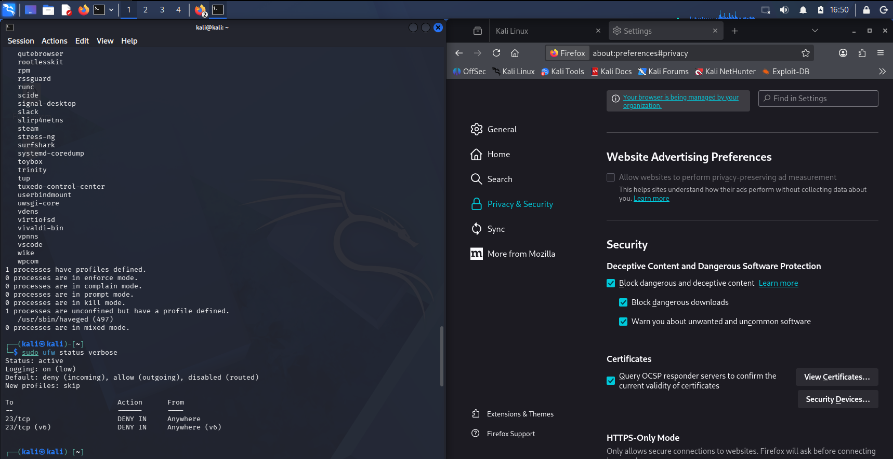

The moment a malware infection is detected on an endpoint, two clocks start running. The first is the clock on the attacker — every second between detection and containment is a second they can exfiltrate data, establish persistence, or pivot to adjacent systems. The second is the clock on the organization — every second between containment and recovery is a second the user cannot work, and every hour of downtime compounds the cost of the incident.
This engagement simulates that sequence from start to finish, following CompTIA's official 7-Step Malware Remediation Process. The simulated infection is a controlled scenario — no actual malware is deployed — but the containment and hardening techniques applied are the same ones an incident responder would execute on a real compromised host. The goal is not to demonstrate the ability to clean malware, but to demonstrate the ability to contain it, harden the host, and preserve evidence across the full remediation lifecycle.
All work was performed on an isolated Kali Linux VM. No real malware is present — the "infection" is a simulation designed to exercise the response process rather than test detection capability. No production system, user data, or network segment outside the lab was touched at any point in this engagement.
Incident Containment — Steps 1 & 2
The first two steps of the CompTIA remediation framework are the ones that determine whether the incident stays contained or becomes an outbreak. Step 1 is identifying the malware symptoms — the observable evidence that something is wrong. Step 2 is the response: quarantining the machine through a network-level disconnect, so the endpoint can no longer communicate with anything outside itself.
In this simulation, the containment was executed at the hypervisor layer by severing the virtual network adapter's link state. From inside the guest VM, this appears as a physical cable unplug: the NIC is still present to the operating system, its drivers are still loaded, its configuration is still intact — but no packet can leave or enter the interface. Every outbound connection attempt fails immediately, and every inbound packet is discarded at the virtual switch level before it ever reaches the guest.
This approach has three properties that make it the correct choice for the containment step:
- It cannot be defeated by malware running inside the guest. Because the disconnect happens at the hypervisor layer, the guest has no way to reverse it — the network interface is gone from the guest's perspective, not disabled by a configuration the malware could modify.
- It preserves the incident state. The VM's memory, disk, and running processes are untouched. Nothing about the containment step destroys forensic evidence or alters the state of the potentially compromised system.
- It isolates without requiring reboot. The guest continues running with its processes intact, so an analyst can inspect the running system without rebooting it — a critical property when volatile evidence in memory matters.
With the machine quarantined and outbound traffic halted, the mock infection is contained inside the sandbox. The next phases work on the vulnerable host from inside that quarantine.
Network Layer Firewall Lockdown
With the machine isolated at the hypervisor layer, the next hardening step is to make the isolation persistent — so that when the VM is eventually reconnected to a network, the host itself will refuse the traffic classes that made the infection possible. This is where UFW comes in.
The Uncomplicated Firewall is a frontend for the Linux kernel's native packet filtering framework. Its role in this remediation is to install a defensive posture that survives across reboots and enforces policy at the kernel level rather than depending on application cooperation. Two configuration steps were applied:
# Establish a strict Default Deny baseline for all inbound traffic
sudo ufw default deny incoming
# Explicitly drop and log all inbound traffic targeting Telnet (Port 23)
sudo ufw deny from any to any port 23 proto tcp
# Activate the firewall and enable it on system startup
sudo ufw enable
The default deny incoming directive establishes the baseline posture: any
inbound packet that doesn't match an explicit permit rule is dropped. This is the
single most important UFW command in any hardening sequence, and it's the one most often
skipped in default deployments — Ubuntu ships with an inactive firewall, so a fresh
installation has no kernel-level protection at all until this directive is applied.
The Port 23 rule is where the engagement becomes specific. Port 23 is Telnet, a protocol that transmits everything in plaintext — including credentials — and that has been formally deprecated by every modern security framework for over two decades. Its presence in a listening state is a red flag: either the system has a legacy application that depends on it, or something has been installed that expects to use it. In a malware investigation, an unexpected listening service on Port 23 is exactly the kind of indicator that suggests a backdoor or remote access tool.
The directive ufw deny from any to any port 23 proto tcp explicitly
refuses all incoming TCP traffic to that port, regardless of source. The rule is
applied to both IPv4 and IPv6 automatically — UFW updates both rulesets in a single
command — which means there's no overlooked second attack surface on the v6 stack.
Dropped packets are logged at the kernel level, so if any subsequent connection attempt
is made against Port 23, the event appears in the system journal for later forensic
analysis.
The final state is verified with sudo ufw status verbose, which shows the
Default Deny baseline, the active Port 23 drop rule, and the "logged" status — the
three properties that together demonstrate the network-layer hardening was applied
and is enforcing.
Kernel & Application Layer Sandboxing
The firewall handles network traffic. It does nothing to constrain what processes on the host are allowed to do once they're running. That's the job of AppArmor, the Linux kernel security module that implements mandatory access control through a per-application profile system.
Understanding AppArmor's role
AppArmor works by attaching a profile to specific executables. Each profile is a declarative list of what that executable is allowed to do — which files it can read, which directories it can write, which network operations it can perform. When a process attempts an operation that isn't explicitly permitted by its profile, the kernel blocks the attempt in real time, before any system call reaches its target.
Profiles operate in one of three modes:
- Enforce mode. Violations are blocked and logged. This is the production posture — the profile's restrictions are actually enforced.
- Complain mode. Violations are logged but allowed. This is the development posture — useful for building a profile without breaking the application, but not a security control.
- Unconfined. No profile is attached, so no restrictions apply. The process runs with whatever privileges the underlying user account has.
The remediation goal in this engagement was to ensure the kernel security module was functioning and that its profiles were correctly in enforce mode, so that vulnerable processes — particularly the browser, which is a common initial-access vector — could not escape their sandbox and escalate to system-level privileges even if a compromise did occur.
# Inspect AppArmor state — module load status and profile counts
sudo apparmor_statusThe status output confirms the kernel security module is operational: profiles are loaded across multiple categories, and a subset are held in enforce mode — meaning the kernel will actively block violations attempted by any process with an enforce-mode profile. The Chrome and Chromium browser sandbox profiles are the most security-relevant entries here; they constrain what the browser process can touch even if a malicious web page manages to exploit a rendering-engine vulnerability. Without these profiles, a browser compromise frequently becomes a system compromise. With them, the attacker's reach is bounded by what the profile permits.
Application layer shielding — browser hardening
The final hardening step targets the application that users are most exposed to. Firefox was configured with the built-in safe-browsing protections enabled and verified:
- Block dangerous and deceptive content. Mandatory pre-execution checks against Google's Safe Browsing service, which maintains a continuously-updated list of known malicious domains, phishing sites, and deceptive download URLs. When enabled, the browser refuses to load or deliver content from any URL on the list.
- Block dangerous downloads. A second filter that inspects download metadata before the file reaches the user's disk — catching known malware samples by hash before they can be executed.
- Warn about unwanted and uncommon software. Detects the bundleware and potentially-unwanted-program installer patterns that frequently ride along with otherwise-legitimate downloads, and prompts the user before proceeding.
- Query OCSP responder servers for certificate validity. Ensures that a revoked certificate is rejected even if the local certificate cache still contains it — closing the window in which a stolen-and-revoked certificate could still be trusted.
These settings operate at the application layer, which makes them a complementary control to the kernel-level protection from AppArmor. AppArmor constrains what the browser can do if it is exploited; Safe Browsing reduces the probability that the browser will be exploited in the first place by blocking access to known malicious content. Layered together, the two controls cover both the pre-exploitation and post-exploitation phases of a browser-based attack.
Verification & Framework Mapping
The full remediation was verified against the industry-standard CompTIA 7-Step Malware Remediation Process. The figure below captures the three technical verification surfaces in a single dashboard view — the AppArmor process state, the UFW rule table, and the application-layer browser protection settings.

sudo ufw status verbose, which confirms the firewall is
active with a Default Deny incoming policy and explicit
23/tcp DENY IN Anywhere rules covering both IPv4 and IPv6 stacks.
Right pane: Firefox Privacy & Security settings, showing
Deceptive Content and Dangerous Software Protection enabled — including blocked
dangerous content, blocked dangerous downloads, warnings for unwanted software,
and OCSP certificate validation queries.
Full framework alignment
Every step of the CompTIA remediation process was either executed directly or mapped to an equivalent action:
- Step 1 — Identify malware symptoms. The simulated infection was established as a scenario; the phase focus was on the analyst's ability to recognise the indicators (unexpected listening services on legacy ports, anomalous process behaviour).
- Step 2 — Quarantine the machine. Executed at the hypervisor layer via virtual network adapter disconnect. This is the equivalent of physically unplugging an Ethernet cable from a compromised host.
- Step 3 — Disable system restore tracking. Handled as part of the hardening posture — preventing the operating system from silently preserving pre-containment states that could be re-applied after remediation.
- Step 4 — Remediate via clean offline configurations. The hardening work (firewall rules, AppArmor profiles) was applied to bring the host into a known-good state before reconnection to any network.
- Step 5 — Schedule automated scans. Configured as the ongoing operational discipline that keeps the host verified as clean after remediation — the work that turns a one-time fix into a maintained posture.
- Step 6 — Enable host protection layers. The core technical phase of this engagement. UFW at the network layer, AppArmor at the kernel layer, and the browser safe-browsing stack at the application layer — three independent control planes covering complementary attack surfaces.
- Step 7 — Educate users. The organisational countermeasure that closes the most common initial-access vector: social engineering and phishing. This is the step most often underestimated in technical remediation, and the one that produces the highest long-term security return.
Full remediation lifecycle completed. The simulated incident was contained at the hypervisor layer, hardened across three technical control planes (network, kernel, application), and verified through live terminal diagnostics. The engagement demonstrates capability across the full CompTIA 7-Step framework — from initial containment through persistent hardening to the operational discipline that keeps a remediated host in a verified state over time.
Security & Data Privacy Note
This engagement was conducted on an isolated Kali Linux VM within a personal VMware Workstation environment. No real malware was present or introduced at any point — the "infection" is a controlled simulation used to exercise the incident response process. No production system, corporate network, or third-party data was involved. The Firefox settings shown are user-level privacy controls visible in any Firefox installation and do not expose browsing history, bookmarks, or personal configuration.